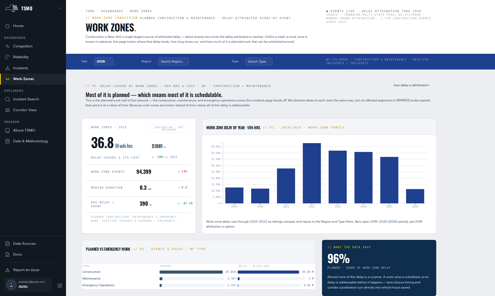

Work Zones dashboard.
The delay attributed to construction, maintenance and emergency-operations events: where it lands, how long zones run, and how much of it is planned work that can be scheduled around. What each panel shows, on what basis, and how it is computed. Also what the page does not show.
What this page answers
"What construction costs drivers." How much delay work zones caused in a year and region, how it splits between planned and emergency work, which facilities and regions carry it, and how long zones run. The page's lede states that construction is New York's largest source of attributed delay, about twenty-two times the delay attributed to crashes.
Filters
Year, Region and Type. The bar is annotated NY-filtered · construction & maintenance · reactive incidents → incidents. Type offers Construction, Maintenance and Emergency Operations. See Using the filter bar. At the 2026-09-08 check the dashboard opened on 2026, the current and partial year; set Year to a complete year before you read a total.
Most of it is planned
The headline card gives work-zone delay in vehicle-hours and its cost for the filters. Work-zone delay by year · veh-hrs plots 2019 to 2026 and follows Region and Type. Planned vs emergency work sets each type's event count beside its delay.
How it is computed. How much delay work zones cause, where it lands, how long zones run, and how much is planned work. Each event's footprint is its affected segments and 5-minute slices with delay above the recurrent baseline, summed to vehicle-hours and converted to dollars. See Work-zone delay.
- The caption: work-zone delay rose through 2021–2022 as lettings ramped. Bars span 2019–2026, 2026 partial; attribution before 2019 is sparse.
- A zone with no lane closure and no speed drop carries no delay but still counts as an event.
Where it lands
Top facilities by work-zone delay ranks facilities by attributed vehicle-hours, with dollars at the interim $20 basis; the caption notes that New York City corridors dominate. Work-zone delay by NYSDOT region gives each region's total in millions of vehicle-hours. Both follow Region, Year and Type.
How long they run
Work-zone duration profile is a histogram in hours, with a Duration & exposure card beside it. Durations are the estimated duration recorded on the event. Most work-zone events carry short estimated durations; the long tail is where the delay accrues.
How work-zone delay is measured
The method note at the foot of the page. Work-zone events are the three categories, filtered to New York, the planned-work counterpart to the Incidents dashboard. Delay is attributed per zone against the recurrent baseline. Dollars are an interim $20, with a class-weighted rate being applied at the data layer. Exposure in lane-mile-hours is on the backfill list; safety is a separate dashboard in development.
What this page does not show
- Active work zones. A band for zones active now, with a map and live counts, was removed on 2026-07-28. The dashboard is historical delay attribution by year. A live count needs a feed the platform does not hold, and a map could only be scoped to a date the rest of the page does not cover.
- Exposure. Lane-mile-hours need a length join that is not built.
- Safety. Crashes in work zones, secondary crashes and worker injuries are a separate dashboard in development.
- The monthly construction bucket. The Congestion dashboard's construction figure is a capped share of a monthly series; this page sums per-event footprints. They differ by construction. See Comparability.
Downloads
No download control on the page. Data & Methodology › Downloads & API lists the event-by-segment delay tables. Incident Search lists construction events row by row.

References
- TSMO Work Zones dashboard, published 2026-07-31: lede, status line, band titles, captions, method note.
- TSMO About page: "Work Zones — what construction costs drivers".
- Feedback records: Type options limited to three (2192571) · active-zones band removed, with the feasibility measurements (2195604) · Incidents made the complement (2195387).